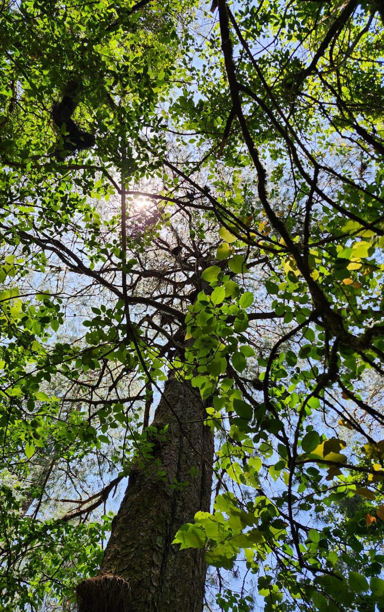
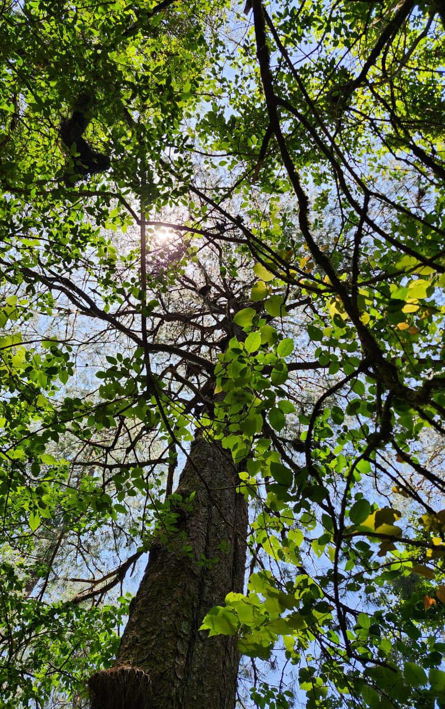

PINAL DE AMOLES QRO
¿TE GUSTARIA CONOCER MAS SOBRE ESTA MAGICO LUGAR?
Pinal de Amoles, ubicado en la Sierra Gorda de Querétaro, tiene una historia rica y fascinante. Se cree que los primeros habitantes llegaron alrededor del año 6000 a.C., siendo recolectores y cazadores. Más tarde, tribus Chichimecas, Pames y Jonaces se asentaron en la región, dejando evidencia de su presencia en varios sitios arqueológicos1.
Durante la época colonial, Pinal de Amoles se convirtió en un importante centro minero tras el descubrimiento de minas de plata en la zona. En 1609, se le otorgó la categoría de Alcaldía Mayor Real y Minas de Escanela, abarcando lo que hoy son varios municipios1
Además de su historia minera, Pinal de Amoles es conocido por sus leyendas y mitos transmitidos a través de generaciones. Estas historias sobrenaturales y criaturas fantásticas forman parte de la rica tradición oral del pueblo2.
AQUI ALGUNAS IMAGENES SOBRE ESTE MARAVILLOSO PUEBLO...
 



REGRESAR